Инструментызапуска
Опиши свою аудиторию, и база покажет, какие инструменты на неё сработают, а какие будут мимо. С публичными кейсами и цифрами.
База инструментов
Слева портрет аудитории: девять характеристик, по которым инструменты реально отличаются. Выбери пресет или собери свой, и карточки отсортируются от «отлично подходит» до «мимо». В каждой карточке: как сделать, ориентиры по цифрам, кому лучше и хуже, публичный кейс.
Проверь себя
Десять ситуаций с реальными аудиториями. Выбираешь инструмент, сразу видишь разбор. Из разбора можно открыть карточку инструмента. Уровень засчитывается с семи правильных.
Собери запуск
Портрет ЦА берётся из базы. Добавляй инструменты на каждый этап: тренажёр сразу проверяет, подходят ли они аудитории, хватает ли окон продаж, не надорвётся ли эксперт и сколько недель займёт запуск.
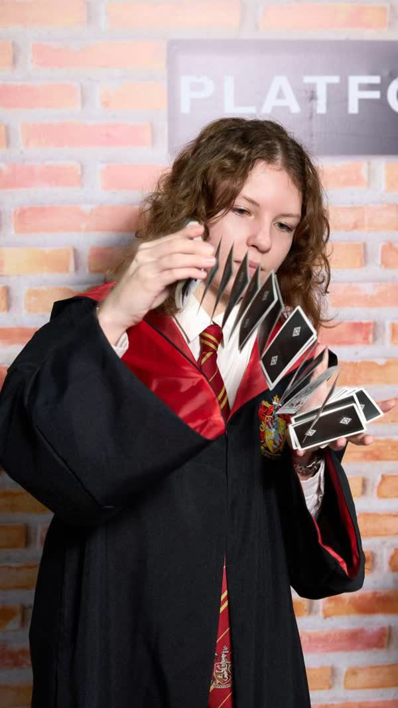
Твой первый клиент
фокусница
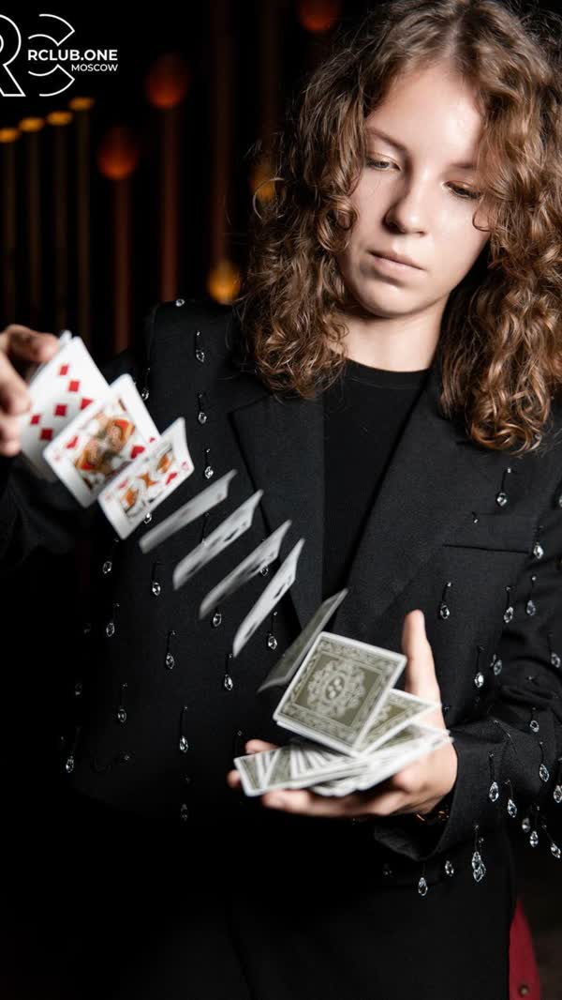
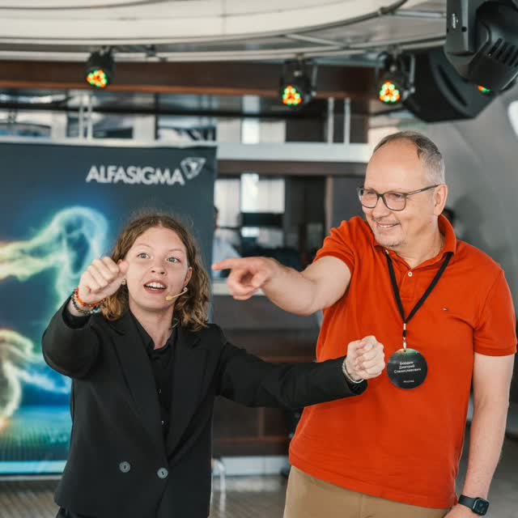
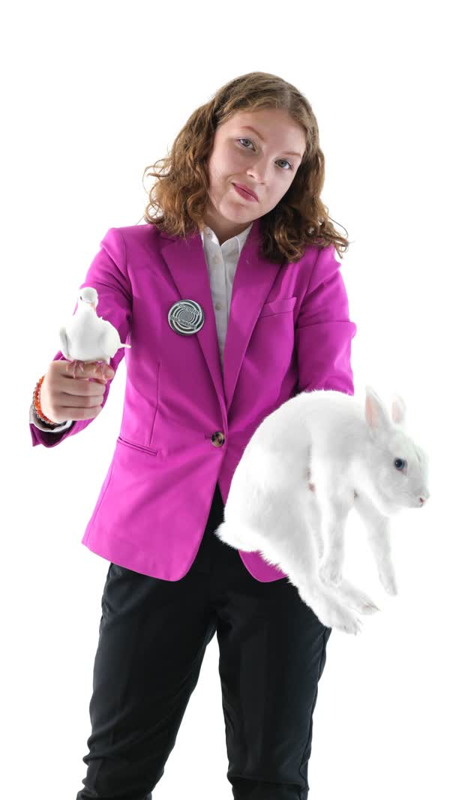
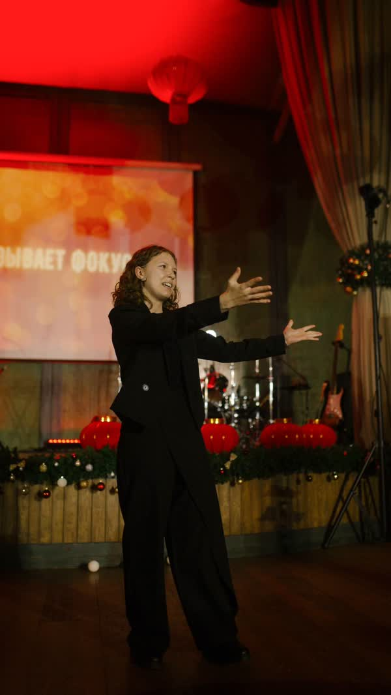
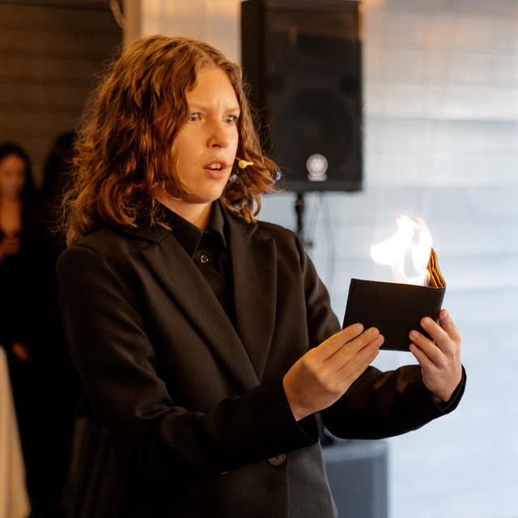
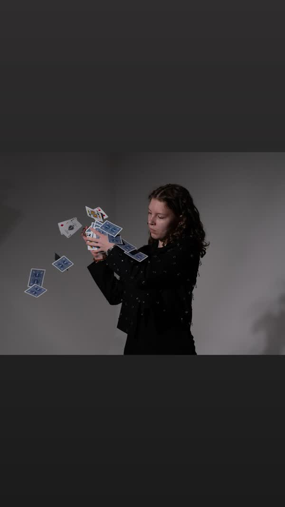
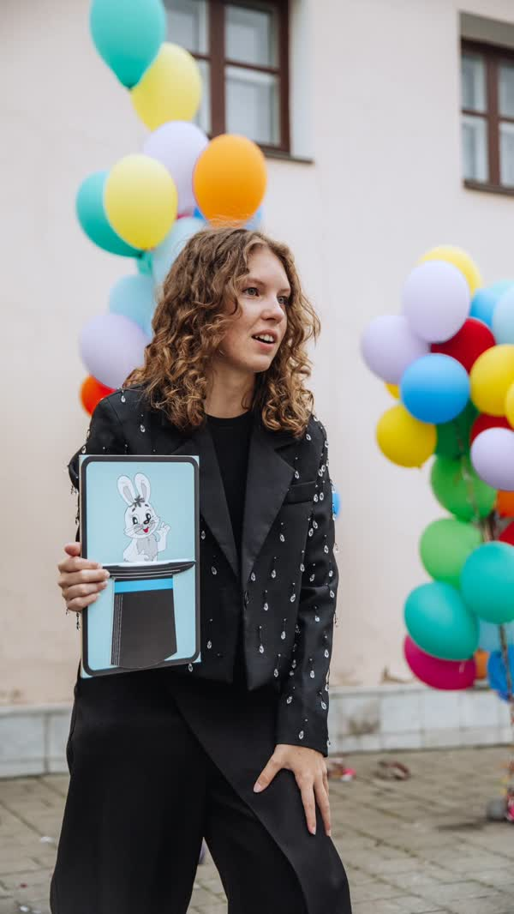
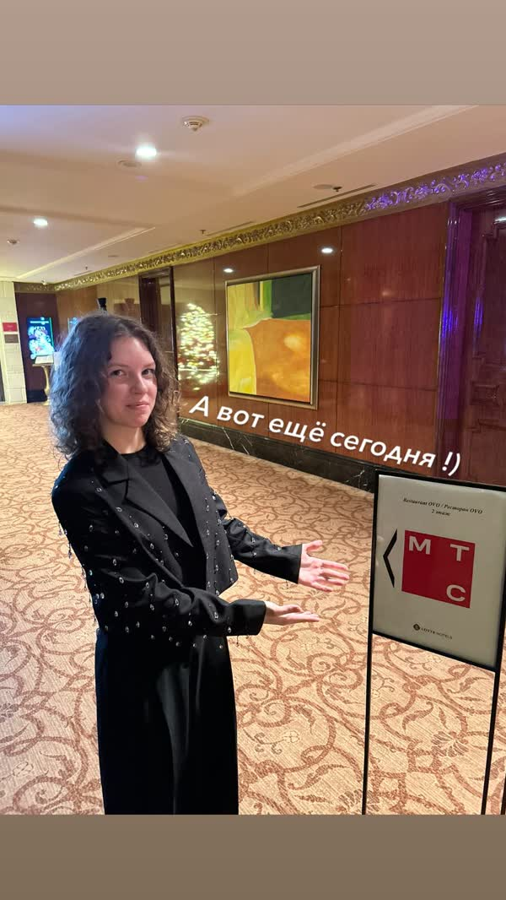
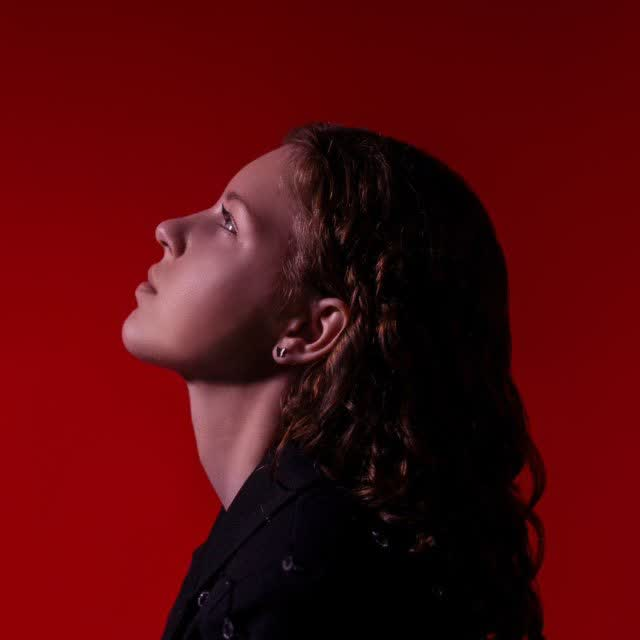
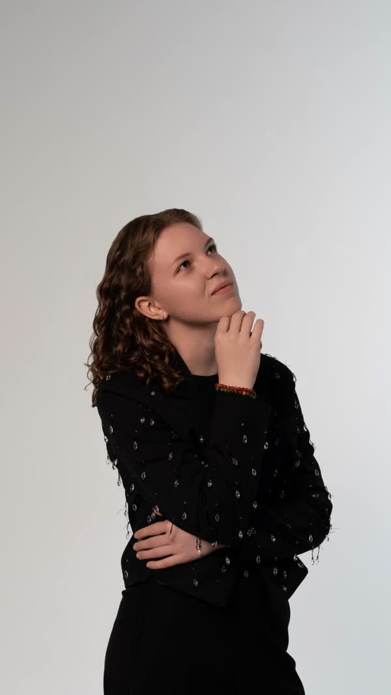
Ты продюсер Полины. На каждом шаге выбираешь из вариантов и сразу видишь разбор. Сначала портрет аудитории, потом продукт, потом запуск в конструкторе. В конце сверяешься с вариантом Миши и отправляешь ему ответы.